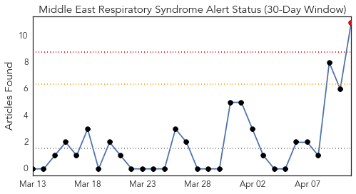
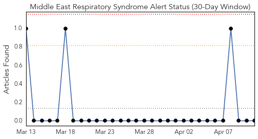
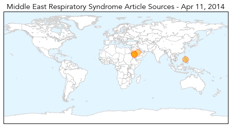
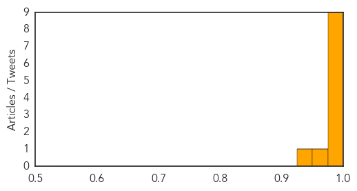

Toggle navigation
Early Warning
Daily Alerts
Middle East Respiratory Syndrome
Apr 11, 2014
Compare to:
-
Dengue Fever
Hemmorhagic Fever
Mold/Fungal Infection
Influenza
Meningitis
Pertussis / Whooping Cough
Cholera
Hepatitis
Chikungunya
Yellow Fever
Bubonic Plague
West Nile Virus
Swine Flu
Ebola
Measles
Unknown
Mumps
30 Day Trends
Web: 1
alerts
, 0
warnings
Twitter: 0
alerts
, 0
warnings
Top Articles:
1.000
MERS sickens UAE paramedics, Jordanian, more Saudis
0.999
Mers patients moved to isolation ward
0.999
Filipino paramedic in UAE dies from Mers as five colleagues also infected
0.999
UAE: Paramedic dies from MERS, others infected
0.997
Middle East respiratory syndrome coronavirus (MERS-CoV) – update
0.997
Saudi Arabia, UAE Report Deaths Due To MERS Infection
0.996
Special quarantine units for MERS patients urged
0.995
'Abu Dhabi schools free of Mers virus' - Emirates 24
0.994
Filipino paramedic dies of MERS in UAE
0.956
Common action plan to combat MERSHealthcare
0.937
Additional Case of MERS-CoV is Reported to WHO
Top Tweets:
No tweets found for Apr 11, 2014
Web/News Articles

Tweets

Article Locations

Article Confidences
